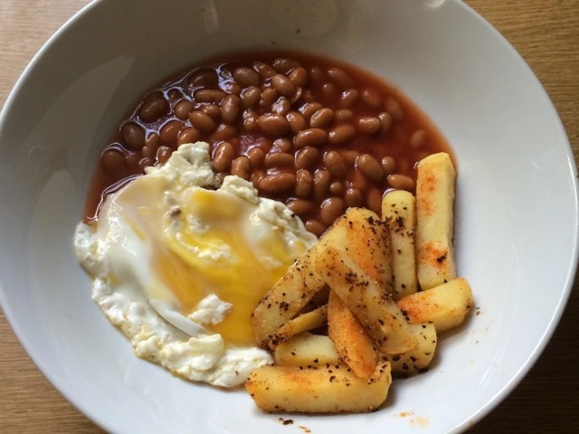

Egg, beans and chips

Description
The clue is in the name.
Ingredients
- 1 can of baked beans
- 2 eggs
- Maybe 3 medium potatoes
- Cooking oil
- Butter
Method
- Gently warm up the beans in small saucepan
- Heat up a decent amount of oil in a largish frying pan
- Slice the potoatoes into approx 1cm thick discs
- Chop the discs into chips, or don't, up to you
- Fry them until golden brown, turning a couple of times as you go
- In another pan, heat some oil and a little butter for the eggs
- Fry the eggs to your liking
- Put it all on a plate and serve with a beverage of your choice, preferably tea